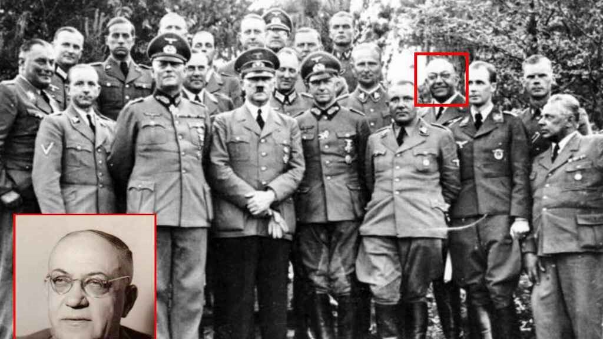
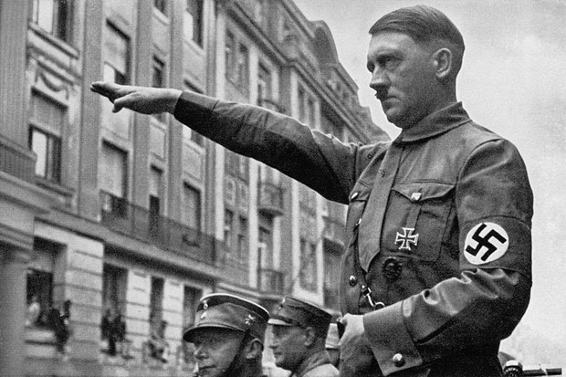

Theodor Gilbert Morell ဟာ ခေါင်းဆောင်ကြီး ဟစ်တလာ၏ ယုံကြည်ရတဲ့ လူရင်းဆရာဝန် အဖြစ် ကိုးနှစ်တိုင် ထမ်းဆောင်ခဲ့သူပါ၊ ဟစ်တလာ ရဲ့ ချီးမြောက်ဂုဏ်ပြုမှုတွေကိုလည်း ပုံအောရရှိခဲ့သူဖြစ်ခဲ့ပါတယ်။ သို့သော်လည်း ဒေါက်တာ Morell (အောက်ပုံ) ဟာ ဟစ်တလာနဲ့ပတ်သက်ပြီး ရောဂါရှာဖွေသုံးသပ်နာမည်တပ်ဆုံးဖြတ် ဖို့ နှောင့်နှေး ကြံ့ကြာ မှုတစ်ခု ရှိခဲ့ဖူးပါတယ်။
တတိယ ဂျာမန်အင်ပါယာကြီးကို အားမာန်အပြည့်နဲ့ ထူထောင်ခဲ့ပြီး ဟိတ်ဟန်အပြည့် နဲ့ စည်းရုံးခေါင်းဆောင်နိုင်ခဲ့တဲ့ ခေါင်းဆောင်ကြီး ဟစ်တလာဟာ အင်ပါယာကြီး တစ်ဖြေးဖြေးပျက်စီးလာနေတဲ့ အချိန်မှာတော့ ကွန်ကရစ်တွေအထပ်ထပ် ကာရံထားတဲ့ ဘာလင်က မြေအောက်ခန်း ဗုံးခိုကျင်းထဲမှာပဲ အမြဲနေသွားခဲ့ရတာပါ။ ဟစ်တလာရဲ့ ဂျာမန်အင်ပါယာကြီး တစ်စစီ ပြိုကွဲပျက်စီးနေချိန်နှင့် ထပ်တူဆိုသလို အင်ပါယာကြီးကို ဦးစီးခေါင်းဆောင်ဖို့ အားအင်ကုန်ခမ်း ယုတ်လျော့စေနိုင်တဲ့ ကျန်းမာရေးအခြေအနေတစ်ခု ခေါင်းဆောင်ကြီးဟစ်တလာမှာ ရှိနေခဲ့ပါတယ်။ ဟစ်တလာနဲ့ သူနောက်လိုက် ထိတ်တန်းအရာရှိများကတော့ ဒီရောဂါအခြေအနေကို ဖြစ်နိုင်သမျှ ဖုံးကွယ်ထားဖို့ ကြိုးစားခဲ့ကြတာပါ။ ဟစ်တလာရဲ့ အပြုအမူအနေအထိုင်တွေကို ပြောင်းလဲတာအပါအဝင် ဝါဒဖြန့်ချီရေးရုပ်သံတွေရိုက်ကူးတဲ့အခါမှာ ဟစ်တလာရဲ့ ရောဂါအခြေအနေကို မမြင်တွေ့ရတဲ့ ရှုထောင့်တွေကပဲ ရိုက်ကူးထုတ်လွင့်တာမျိုးထိလုပ်ခဲ့ကြပါတယ်။ သို့သော်လည်း ဟစ်တလာရဲ့ လျို့ဝှက်ထားတဲ့ ကျန်းမာရေးအခြေအနေကို သူ့ရဲ့ ဝါဒဖြန့်ချီရေး ရုပ်သံဖိုင်တစ်ခု မှာပဲ မြင်တွေ့ခဲ့ရပါတယ်။ ဒီတိုတောင်းလွန်းတဲ့ ဝါဒဖြန့်ချီရေး ရုပ်သံမှာ ဟစ်တလာ နဲ့ သူ့နောက်လိုက် ဗိုလ်ချုပ်ကြီးများ ဖုံးကွယ်ဖို့ ကြိုးစားခဲ့ကြတဲ့ ဟစ်တလာရဲ့ ပကတိ ကျန်းမာရေးအခြေအနေ ကိုမြင်တွေ့နိုင်ပါတယ်။ ဒီရုပ်သံကို တတိယဂျာမန်အင်ပါယာကြီး ပျက်စီးလဲပြို မသွားခင်လေးမှာ ရိုက်ကူးခဲ့တာဖြစ်ပြီး ဂျာမန် အင်ပါယာရဲ့ လူငယ် (ကလေးအရွယ်) စစ်သားလေးတွေကို သူအမြဲနေထိုင်နေခဲ့ရတဲ့ ဘာလင်မြေအောက်ခန်း ထဲကနေ ခဏတာ အပြင်ကိုထွက်၊ တွေ့ဆုံနှုတ်ဆက်ဂုဏ်ပြုတဲ့ အခမ်းအနားမှာ ရိုက်ကူးထားတာပါ။ မူရင်း ရုပ်သံဖိုင်ကတော့ အတော်လေးရှည်လျားနိုင်ပေမယ့် အပိုင်းအများစုဟာ အများပြည်သူကို မချပြခင်မှာပဲ ဖျက်ဆီးပစ်လိုက်ကြပုံပေါ်ပါတယ်။ ၁၉၇၀ ဝန်းကျင်မှာ ပြန်လည်ရှာဖွေတွေ့ရှိခဲ့တဲ့ ဒီ ရုပ်သံထဲမှာတော့ ဟစ်တလာရဲ့ အထိန်းအကွပ်မဲ့ လှုတ်ခါရမ်းနေတဲ့ (ဘယ်ဖက်)လက်ကို ရှင်းရှင်းလင်းလင်းတွေ့ရမှာဖြစ်သလို ဒီလိုမျိုး ခန္ဓာကိုယ်ကြွက်သားလှုတ်ရှားမှုနဲ့ အာရုံကြောစနစ်တွေကို ထိခိုက်စေတဲ့ Parkinson ရောဂါရဲ့ လက္ခဏာတွေကို ဒုတိယ ကမ္ဘာစစ်အတွင်းမှာပဲ ဟစ်တလာဟာ စတင်ခံစားခဲ့ရတာပါ။ ဘယ်လက်လှုတ်ရမ်းနေတာ ဖုံးကွယ်ဖို့နဲ့အနည်းငယ်သက်သာစေဖို့အတွက် ဟစ်တလာဟာ သူ့ကိုထောက်ခံသူ သူ့နောက်လိုက်တွေနဲ့ တွေ့ဆုံမိန့်ခွန်းပြောတဲ့အခါမျိုးမှာ ဘယ်ဖက်လက်ကိုလက်မောင်းရင်းနဲ့ တတောင်ဆစ်ကွေးတို့နေရာတွေမှာ ခန္ဓာကိုယ်နဲ့ ကျစ်နေအောင်ကပ်ထားပြီး လက်ချောင်းတွေက ခါးပတ်ကို ကိုင်ထားတာမျိုး ၊ ဒါမှမဟုတ် တုတ်ချောင်းသေးသေး တို့ စာရွက်လိပ်တို့ကိုင်ထားတာမျိုး လုပ်လေ့ ရှိပါတယ်။
လေ့လာသူတွေကတော့ ဟစ်တလာဟာ ပါကင်ဆန် ရောဂါကို ၁၉၃၀ ဝန်းကျင်ကာလတွေ ကတည်းက ခံစား နေရနိုင်တယ် လို့ ဆိုကြပေမယ့် ၁၉၄၀ ဝန်းကျင်ထုတ်လွှင့်ခဲ့တဲ့ ဝါဒဖြန့်ချီရေး ရုပ်သံတွေထိတော့ ဟစ်တလာဟာ သူ့လက်ကို ကောင်းကောင်းထိန်းချုပ်နိုင်သလို၊ အပြောအဆို အပြုအမူတွေကလည်း အားမာန်အပြည့်နဲ့ သွက်လက်နေဆဲပါပဲ။ ဒါပေမယ့် ၁၉၄၄ ခုနှစ် အတွင်း မှာတော့ ဟစ်တလာဟာ သူ့လက်တွေကို ထိန်းချုပ်နိုင်ခြင်းမရှိတော့ပဲ သိသိ သာသာ လှုတ်ခါရမ်းနေတာကို မြင်တွေ့နိုင်ပါတယ်။ စကားပြောဆိုတာ၊ လမ်းလျောက်တာ နဲ့ လက်ဆွဲနှုတ်ဆက်တာတွေမှာလည်း သိသိသာသာ နှေးကွေးသွားတဲ့ပုံရှိပြီး (၅၆ နှစ်သာရှိတဲ့) အသက်နဲ့ စာရင် ပိုမို အိုမင်း နေသလိုဖြစ်နေခဲ့ပါတယ်။ ဒေါက်တာ Morell ဟာ ၁၉၄၁ အတွင်းမှာပဲ ဟစ်တလာရဲ့ လက်တုန်တာကို ပထမဆုံး မှတ်တမ်းတင်ခဲ့ဖူးပေမယ့်လည်း စစ်ကြီး ရဲ့ နောက်ဆုံးနေ့ရက်များတွင်မှ Shaking palsy or Parkinson’s disease လို့ မှန်ကန်စွာ diagnosis လုပ်နိုင်ခဲ့ပါတယ်။ ပါကင်ဆန် ရောဂါဟာအာရုံကြောစနစ်တွေကိုထိခိုက်စေနိုင်တဲ့ ရောဂါဖြစ်ပြီး စဉ်းစားတွေးခေါ်မှုနဲ့ ကျွတ်သားထိမ်းချုပ်မှုကို အားနည်းလျော့ပါးစေတဲ့ ရောဂါတစ်မျိုးဖြစ်ပါတယ်။ ဒါပေမယ့်လည်း မျက်မြင်သက်သေတွေကတော့ ဟစ်တလာဟာ နောက်ဆုံးအချိန်ထိ ထက်မြက် စူးရှပြီး တိကျပြတ်သားခဲ့ သူဖြစ်ခဲ့တယ်လို့ဆိုပါတယ်။